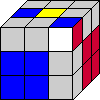
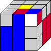

CFOP: The First 2 Layers
The second step that helps us solve the Cube is to finish the bottom 2 layers:

How to Solve the First 2 Layers:
Once we are done with the Cross, all four faces excluding the white and the yellow faces will have an edge connected to the center. Our job now is to find the pairs of edge and corner to connect them together and move them to there correct position.
Below is the list of all 41 possible corner-edge positions and how to move them back to finish the first 2 layers.
F2L Algorithms:
| Number | Image | Algorithms | Number | Image | Algorithms |
|---|---|---|---|---|---|
| 1 | U (R U' R') | 2 | y' U' (R' U R) | ||
| 3 | U' R U R' U2 (R U' R') | 4 | d R' U' R U2' (R' U R) | ||
| 5 |  | U' R U2' R' U2 (R U' R') | 6 | d R' U2 R U2' (R' U R) | |
| 7 | y' R' U R U' d' (R U R') | 8 | R U' R' U d (R' U' R) | ||
| 9 | y' (R' U' R) | 10 | (R U R') | ||
| 11 | d R' U' R U'(R' U' R) | 12 | U' R U R' U (R U R') | ||
| 13 |  |
U' R U2' R' d (R' U' R) | 14 | R' U2 R2 U R2' U R | |
| 15 |  | d R' U R U' (R' U' R) | 16 | U' R U' R' U(R U R') | |
| 17 | R U2' R' U' (R U R') | 18 | y' R' U2 R U (R' U' R) | ||
| 19 | U R U2 R' U (R U' R') | 20 |  |
y' U' R' U2 R U' (R' U R) | |
| 21 | U2 R U R' U (R U' R') | 22 | y' U2 R' U' R U' (R' U R) | ||
| 23 | y' U R' U2 R y R U2 R' U R U' R' | 24 | U' R U2' R' y' R' U2 R U' R' U R | ||
| 25 | U R U' R' d' (L' U L) | 26 |  |
y' U' R' U R r' U' R U M' | |
| 27 |  |
y' R' U' R U (R' U' R) | 28 | R U R' U' (R U R') | |
| 29 | R U' R' U (R U' R') | 30 | y' R' U R U' (R' U R) | ||
| 31 | U' R U' R' U2 (R U' R') | 32 | d R' U R U2 (R' U R) | ||
| 33 | U' R U R' d (R' U' R) | 34 | d R' U' R d' (R U R') | ||
| 35 | R U' R' d (R' U R) | 36 | [R U R' U'][R U R' U'](R U R') | ||
| 37 | R U' R' U' R U R' U2 (R U' R') | 38 | R U R' U2 R U' R' U(R U R') | ||
| 39 | R U' R' d R' U' R U' (R' U' R) | 40 | R U R' U' R U' R' U2 y' (R' U' R) | ||
| 41 | R U' R' U y' R' U2 R U2' (R' U R) |